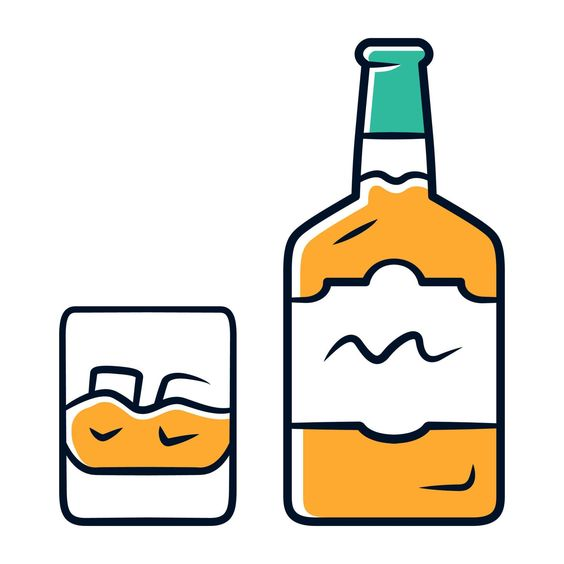
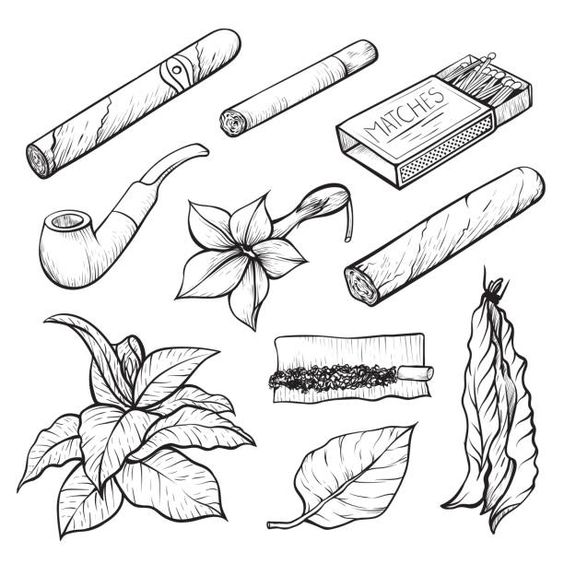
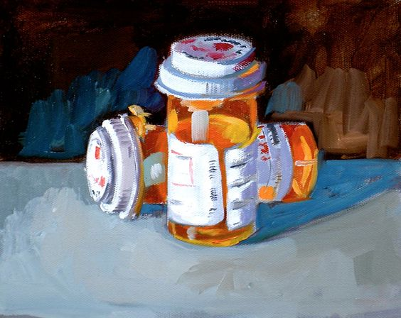
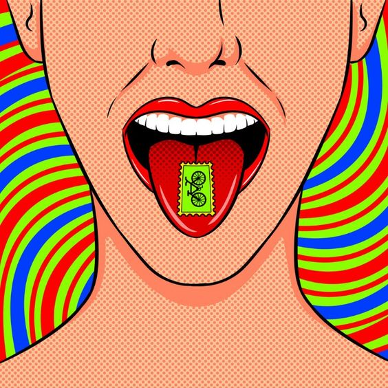

Las drogas mas comunes en las escuelas suelen ser aquellas que son faciles de conseguir y que tienen un costo relativamente bajo. Algunas de las mas frecuentes incluyen:
- Alcohol: Aunque es legal para adultos, muchos adolescentes lo consumen debido a su accesibilidad. El alcohol puede tener efectos serios en el desarrollo cerebral y el comportamiento de los jóvenes. 
- Marihuana: Es una de las sustancias más comunes en las escuelas debido a su accesibilidad. Aunque se percibe como "menos peligrosa", su consumo frecuente puede afectar la memoria, el aprendizaje y el desarrollo cerebral en adolescentes.
- Tabaco y cigarrillos electrónicos (vapeo): En años recientes, el vapeo se ha popularizado entre los adolescentes debido a la falsa percepción de que es menos dañino que fumar. Sin embargo, el vapeo contiene nicotina, que es altamente adictiva y puede causar problemas de salud. 
- Medicamentos recetados: Algunos estudiantes consumen medicamentos como analgésicos, ansiolíticos o estimulantes, que obtienen de familiares o amigos. Estos medicamentos pueden ser adictivos y peligrosos si no se usan bajo supervisión médica. 
- Inhalantes: Productos domésticos como pegamento, aerosoles y otros solventes son a veces inhalados para experimentar efectos psicoactivos. Son muy peligrosos y pueden causar daños cerebrales graves y otros problemas de salud.
- Éxtasis y LSD: Aunque no son tan comunes como las anteriores, algunos estudiantes pueden experimentar con drogas de tipo "fiesta" o "psicodélicas" en contextos específicos. 